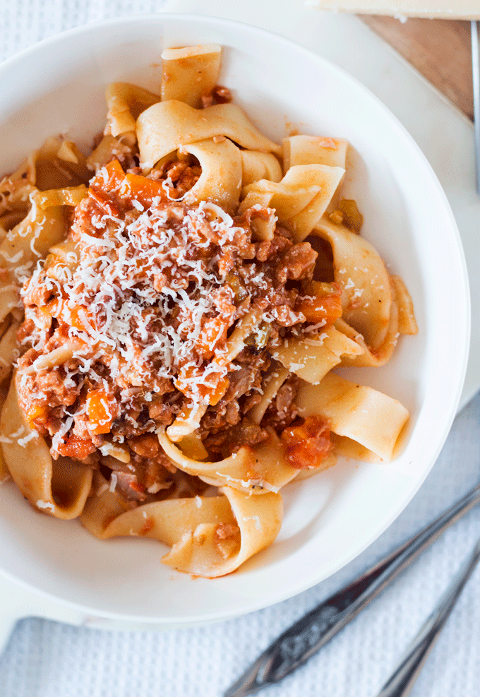

Pork Ragu

Belly warming and made with love, this slow cooked pork mince ragu is the perfect way to
celebrate the weekend. Pour yourself a glass of wine and spend some time in the kitchen
preparing this heavenly dish for your loved ones
Ingredients
- 230g bacon
- 1 large carrot
- 2 celery stalks
- 1 onion
- 450g pork mince
- 118ml dry red wine
- 2 tbsp tomato paste
- 237ml chicken stock
- 237ml whole milk
- salt and pepper
- tagliatelle
- parmesan
Steps
- Fry bacon gently in a saucepan. Once cooked, add in the carrots, celery and
onion and cook softly until slightly brown and the onion is translucent
- Add in the pork mince and stir constantly until browned (see notes re fat)
- Add in the wine, tomato paste and a little of the stock. Stir to combine
- Simmer for two hours, gradually adding in the remaining stock and milk during
that time. Season to taste with salt and pepper
- To serve ladle a scoop of the meat mixture over some freshly cooked pasta and
top with parmesan cheese
Back to homepage